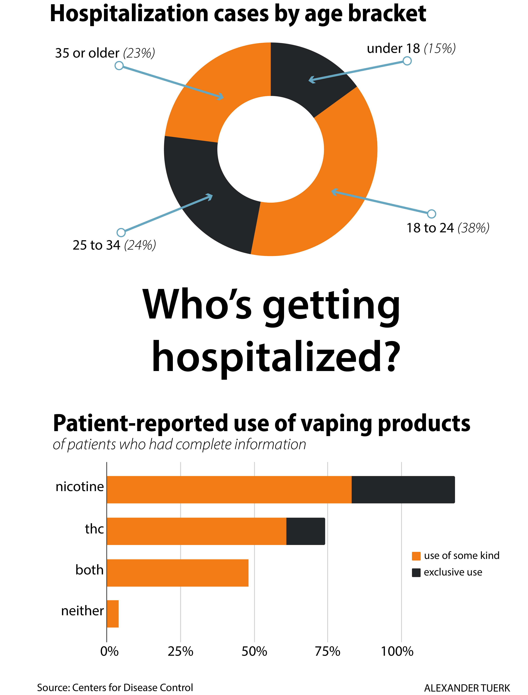
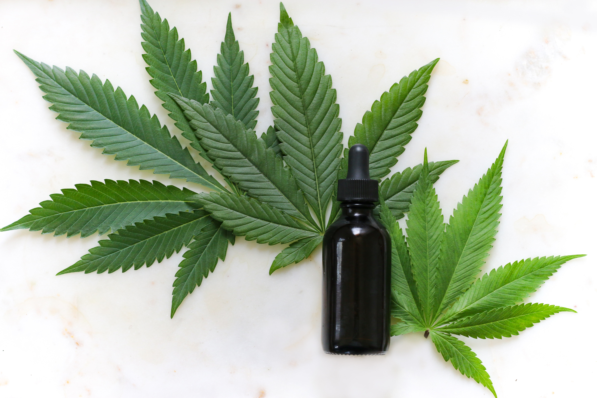
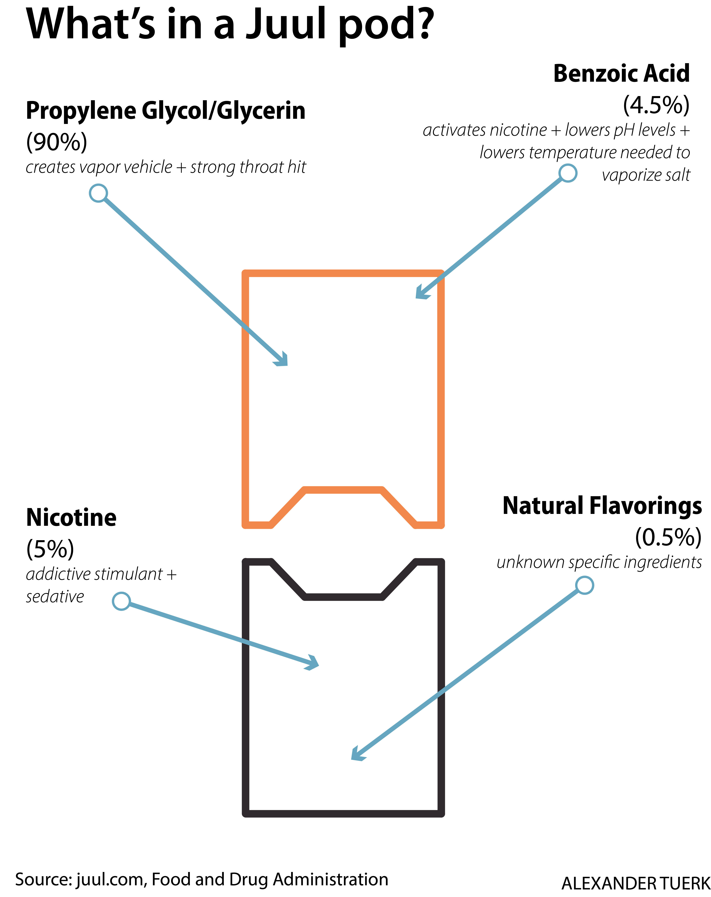

As the nation was rocked by a rise in vaping deaths related to lung illnesses and injuries, leading health groups like the Centers for Disease Control and the Mayo Clinic are still unsure as to the ingredients responsible.
The CDC reported that as of November 20, 2,290 lung injury cases associated with vaping products have been reported nationally, with 47 deaths confirmed in 25 states. The majority had a history of vaping products containing THC, the psychoactive compound in marijuana. Some patients used only nicotine vape products, but many combined the two.
In an editorial published in the New England Journal of Medicine on September 6, patients were reported to have a variety of respiratory illnesses, including pneumonia. According to the CDC, 70% of those hospitalized are male, and 54% are 24 years old and under.
 Juul Labs, Inc. sells Juuls and Juul pods, a line of popular vaping products that has become the center of a push from lawmakers and the Trump administration to ban flavored nicotine products. The Juul website said they were founded with “the goal of improving the lives of the world's one billion adult smokers,” giving those adults “the tools to reduce or eliminate their consumption entirely.” Juul has recently come under fire from the Food and Drug Administration — and many states’ attorneys — as they investigate the company’s advertising practices.
One Juul pod contains about the same amount of nicotine as a pack of cigarettes. Investigators say, along with attractive flavors and packaging, pods are getting minors addicted.
“Probably safer than cigarettes, for sure,” Dr. J. Taylor Hays, a tobacco dependence researcher, said in an interview posted on YouTube. “But they are not safe.”
The specific ingredients responsible are still unknown, but the New York State Department of Health said on September 5 that the “key focus” of their investigation was vitamin E acetate, found only in the THC products tested. The FDA, CDC and Mayo Clinic have not announced any of their findings regarding suspect ingredients, but the CDC also confirmed the presence of vitamin E acetate in the THC products they tested.
The CDC recommended that individuals not use any THC vape products, but did not do the same for nicotine products.
Leaves from the marijuana plant and a black bottle of hemp tincture. (photo by Kimzy Nanney, Unsplash)
But what is in a THC cartridge, or a Juul pod? What ingredients are these leading health organizations studying?
 Juul lists the ingredients of their pods on their website. They include a mix of propylene glycol and glycerine, benzoic acid, natural and artificial flavorings and, of course, nicotine.
Propylene glycol is a thin, tasteless and odorless liquid which serves as a vehicle to create the inhaled vapor with a strong throat hit. Glycerine is a similar substance, with a sweeter taste and more viscous profile. A 30/60 mix of propylene glycol to glycerine represents about 90% of a Juul pod’s contents, according to Juul’s website. A 2017 study by Phillip Morris found that the inhalation of the two chemicals had no toxic effects on the body.
Benzoic acid makes up about 4.5% of a Juul pod. On its own, it is often used as a food preservative. In a Juul pod, it is a necessary partner to activate the nicotine, which makes up about 6% of a pod. By exposing nicotine to the acid, it creates a nicotine salt. This is different than most e-liquids, which use normal freebase nicotine.
Benzoic acid helps smooth out the otherwise hot and harsh throat hit by lowering the pH levels, as well as lowering the temperature needed to vaporize the salt and making it easier to absorb the nicotine over the lung’s membranes. There is some documented risk of benzoic acid transforming into benzene, a known carcinogen, but the rate of transformation is much lower than in a traditional cigarette, according to an NIH and FDA-funded study from 2017.
The artificial and natural flavorings are not listed on Juul’s website. Because the FDA does not require manufacturers to list the ingredients of their e-liquids, the specific ingredients used to flavor the pods in mango, creme brulee or other options are not available. The FDA has not responded for comment.
THC cartridges and their ingredients are more difficult to study because the medicinal and recreational marijuana industry is still new and the FDA has not been able to regulate the production of cartridges thus far.
However, the two main components can be surmised as the actual THC concentrate or oil and a thinning agent. The two most popular thinning agents used in nicotine e-liquids are propylene glycol, as in a Juul pod, and polyethylene glycol, a similar product. However, unlike the e-liquid market, there is a large black market for off-brand cartridges. A recent drug bust in Kenosha County, Wisconsin, uncovered over a million dollars of mason jars filled with oil packaged cartridges at the apartment of two brothers. They, along with their mother, were charged last week. Because the marijuana market is still in transition from dealers to dispensaries, there is a large opportunity for fake cartridges that use other thinning agents, such as the vitamin E acetate observed in New York.
Even if a person using vaping products purchases juice or a cartridge that doesn’t have any of the harmful ingredients, known or unknown, the effects of nicotine and THC addiction have been widely studied. Both mental and physical dependence on the two drugs could have debilitating health problems, as well as socio-economic drawbacks.
copyright alexander tuerk, ajtuerk.github.io